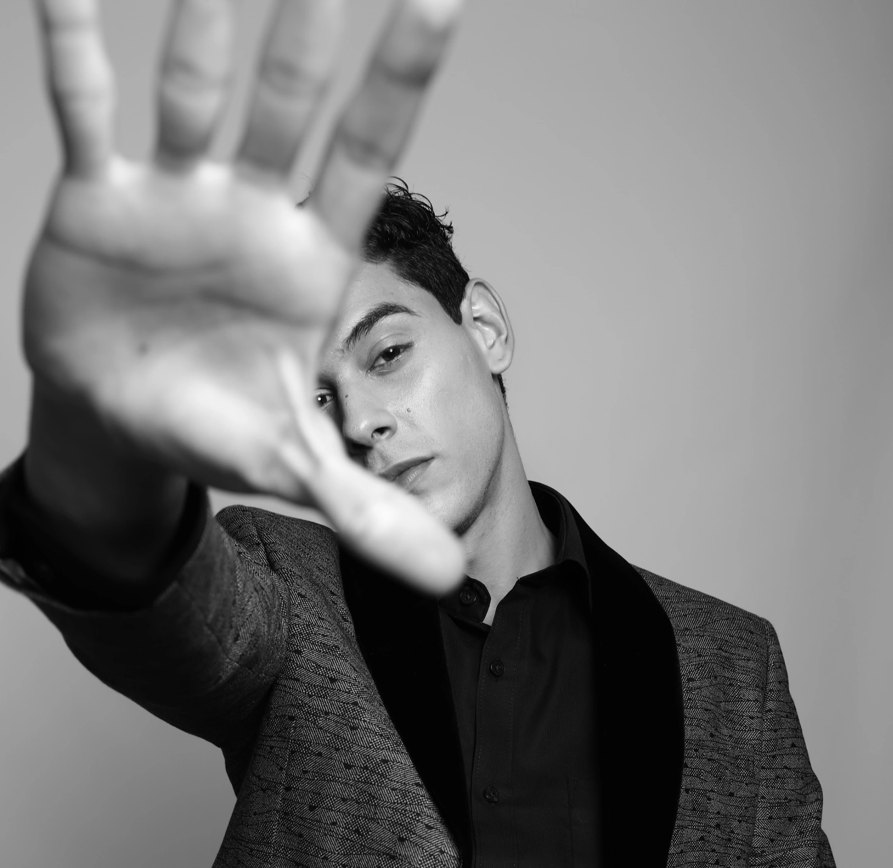

DYPIN
JOSEPH
Dypin Joseph is a Bangalore-based fashion photographer, product photographer, and cinematographer with 9+ years of professional experience. Specialising in fashion photography, newborn & baby shoots, product photography, and commercial cinematography across Bangalore and beyond. Previously lead photographer for ABFRL, with work for Louis Philippe, Allen Solly, Van Heusen, Reebok India, Forever 21 India, Wildcraft, and more. Now available for independent bookings — fashion shoots, product photography, newborn sessions, and video projects in Bangalore. joseph.dipin@gmail.com

// SERVICES_DATA
01
FASHION PHOTOGRAPHY
Editorial and commercial fashion photography in Bangalore. High-fashion lookbooks, catalogue shoots, and brand campaigns — crafted with precision and style. Available across Whitefield, Marathahalli, and all of Bangalore.
02
PRODUCT PHOTOGRAPHY
Professional product and e-commerce photography in Bangalore. Studio packshots, lifestyle product shoots, and brand imagery for businesses across Whitefield, Bellandur, and Sarjapur Road.
03
NEWBORN PHOTOGRAPHY // NOW BOOKING
Now accepting a limited number of newborn photography sessions in Bangalore. A calm, minimal, and baby-first approach focused on comfort, safety, and natural moments.
Introductory portfolio sessions available for families who connect with the visual style. Each session is handled with patience, care, and attention to detail.
04
MATERNITY PHOTOGRAPHY // NOW BOOKING
Now accepting maternity and pregnancy portrait sessions in Bangalore. Focused on creating elegant, minimal, and emotionally grounded imagery.
Introductory sessions available as part of a growing portfolio. Designed for mothers who prefer a refined, cinematic visual approach.
05
CINEMATOGRAPHY
Professional cinematography and videography in Bangalore. Brand films, commercial videos, and visual narratives — shot with cinematic precision. Serving clients across Whitefield, Marathahalli, and Bangalore.
// FAQ_DATA
WHO IS THE BEST FASHION PHOTOGRAPHER IN BANGALORE?
Dypin Joseph is a Bangalore-based fashion photographer with over 9 years of experience working with brands like Louis Philippe, Allen Solly, and Reebok India, offering editorial, catalogue, and commercial fashion shoots.
HOW MUCH DOES A PRODUCT PHOTOSHOOT COST IN BANGALORE?
Product photography pricing in Bangalore depends on the number of products, styling requirements, and shoot complexity. Dypin Joseph offers customised pricing for ecommerce, catalogue, and commercial product shoots.
DO YOU OFFER PRODUCT PHOTOGRAPHY NEAR WHITEFIELD BANGALORE?
Yes, Dypin Joseph offers professional product photography services in Whitefield, ITPL, Marathahalli, and across Bangalore, including ecommerce and catalogue shoots.
DO YOU DO NEWBORN BABY PHOTOSHOOTS IN BANGALORE?
Yes, newborn photography sessions are available in Bangalore with a calm, baby-first approach focused on safety, comfort, and natural moments.
WHERE ARE YOU LOCATED IN BANGALORE?
Dypin Joseph is based in Bangalore near Whitefield (560066) and serves clients across Marathahalli, Brookefield, Sarjapur Road, and nearby areas.
DO YOU PROVIDE FASHION AND PRODUCT PHOTOGRAPHY FOR BRANDS?
Yes, Dypin Joseph provides professional fashion and product photography for brands, including lookbooks, ecommerce, catalogue shoots, and commercial campaigns.